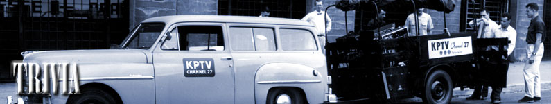
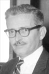
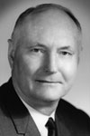
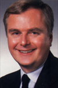
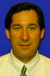
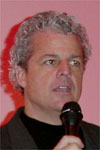

|

|
Impress your friends with this list of
interesting, although probably useless, facts about
KPTV.
Owners
September 18 1952 - November 16,1954
Empire Coil Company
November 17, 1954 - April 30, 1957
Storer Broadcasting Company
May 1, 1957 -
August 31, 1959
George A. Haggarty
September 1, 1959 - July 30, 2001
NAFI Corporation/Chris-Craft Industries
July 31, 2001 - June 16, 2002
NewsCorp (Fox Television Stations)
The News Corporation Limited (NYSE: NWS, NWS.A; ASX: NCP,
NCPDP; LSE: NEWCP) is one of the world's largest media companies with total
assets as of March 31, 2002 of approximately US$42 billion and total annual
revenues of approximately US$15 billion. News Corporation's diversified global
operations in the United States, Canada, continental Europe, the United Kingdom,
Australia, Latin America and the Pacific Basin include the production and
distribution of motion pictures and television programming; television,
satellite and cable broadcasting; the publication of newspapers, magazines and
books; the production and distribution of promotional and advertising products
and services; the development of digital broadcasting; the development of
conditional access and subscriber management systems; and the creation and
distribution of popular on-line programming.
June 17, 2002 -
Meredith Corporation
Meredith Corporation (www.meredith.com) is one of the
nation's leading media and marketing companies with core competencies in
magazine and book publishing, television broadcasting, integrated marketing and
interactive media. Meredith owns 11 television stations that reach approximately
9 percent of television households across the country.
|
General Managers
|
|
September 18 1952 -
December,1955
Russell K. Olsen

|
|
 |
December
15,
1955 -
August 31, 1959
Frank J. Riordan
New
managing
director
at
KPTV
is
Frank
J.
Riordan,
formerly
managing
director
of
television
station
WGBS-TV
in
Miami,
Florida,
it
was
announced
today
by
George
B.
Storer,
Jr.,
vice
president
of
the
Storer
Broadcasting
Company,
owner
and
operators
of
KPTV
and
WGBS-TV.
Riordan
replaces
Russell
K.
Olsen
as
managing
director
of
KPTV
following
Olsen's
resignation.
Riordan's
appointment
as
managing
director
of
KPTV
is
effective
immediately.
Riordan
comes
to
KPTV
with
a
background
of
18
years
in
broadcasting.
He
started
as
a
page
boy
at
NBC
in
Chicago
in
1937,
later
moving
into
sales
promotion
for
the
network
there.
Following
four
years
in
the
army
air
corps
during
World
War
II,
in
which
he
served
in
every
large
theater
of
operations,
Riordan
joined
the
Storer
Broadcasting
Company
at
Miami
as
sales
promotion
manager
for
radio
station
WGBS.
He
later
moved
up
to
commercial
manager
of
that
station
and
subsequently
to
sales
manager
for
WGBS-TV.
Since
August
of
this
year,
Riordan
has
been
managing
director
of
WGBS-TV.
The
new
KPTV
managing
director
has
a
boy,
7,
and
a
girl,
5.
TV
Radio
Entertainment
Guide,
December
18,
1955.
|
|
 |
September 1, 1959 -
August 31, 1982
John S. Hansen
John
S. Hansen, currently local sales manager for
KCOP, Channel 13, Los Angeles, has been named manager of the NAFI
Corporation's Television
Station
KPTV, Channel
12,
Portland,
Oregon, effective
immediately.
Announcement of Hansen's elevation to manager of
KPTV, an ABC-TV affiliate for which Bing Crosby is chairman of the board and Kenyon Brown is
president, was made by Alvin G.
Flanagan, vice president in charge of television for the Broadcast Division of the
NAFI
Corp.
Hansen's appointment is another key stop in the
NAFI
Corp.'s
extensive broadcast
plans.
Brown, who also heads the Broadcast Division of the
NAFI
Corp., has disclosed the Corporation's
intent to acquire the full complement of 5 TV and 7 radio stations permitted by the FCC as soon as possible. Los Angeles Television Station
KCOP, Channel
13, and San
Francisco's Radio Station KOBY are recent
NAFI
Corp. acquisitions, both pending FCC
approval.
A native of
Turlock,
California, and a graduate of the University of California at Berkeley, Hansen
formerly was general manager of ABC's Radio Station KABC in Hollywood and also general sales manager for ABC's San Francisco
outlet, KGO. Earlier in his broadcast
career, Hansen was both research chief and promotion director for ABC's Western Division for both radio and television.
Hansen takes over the position vacated by Frank J. Riordan who remains as Vice President of Oregon Television
Inc., and will report to NAFI Corp. president Kenyon Brown for special
assignment.
Jerry
Ross
Organization
Press
Release,
September
1959
|
|
 |
September
1, 1982 - 2000
L. Martin Brantley
|
|
|
2000 - July 30, 2001
Humberto Carlos (acting General Manager)
|
|
 |
July 31, 2001 - June 16, 2002
Robert Simone (interim General Manager; also General
Manager of KDVR (31) Denver, CO)
|
|
|
June 17, 2002 - July
11, 2005
Teresa Burgess (also General Manager of KPDX (49))
Teresa Burgess,
formerly with NBC affiliate KSBW-TV in Salinas, has been named vice
president/general manager of KPDX-TV,
Meredith Corporation's FOX affiliate serving
Portland, Ore.
Burgess also will serve as general manager of
KPTV, Portland's UPN affiliate, pending Federal
Communications Commission approval of Meredith's station trade with
Fox Television Stations Inc. announced in late
March.
Burgess began her career in
1978 at KSBW-TV, starting as a film editor, camera
operator and production assistant. She went on to
serve as news director, community affairs director, operations director and
program director. In 1989 she was promoted to
director of programming and operations for KSBW and
KSBY-TV, a sister NBC affiliate in San Luis Obispo.
Californianonline.com, April 2,
2002
[Photo
courtesy
Teresa
Burgess]
|
|
 |
September 2005
- present
Kieran Clarke (also General Manager of KPDX (49))
Kieran Clarke has been named
general manager of Meredith-owned Fox affiliate KPTV-TV and UPN
affiliate KPDX-TV in Portland, Ore.
Mr.
Clarke is a veteran
of 12 years in sales and executive positions with Tribune Co.
He will report to Paul Karpowicz, president of Meredith's
Broadcasting Group, who noted in the announcement Wednesday that
Mr.
Clarke "brings to the job a
solid knowledge of the Portland market, having managed KWBP-TV WB
for nearly three years."
Television Week, September 21,
2005
|
Network
Affiliations
September 20, 1952 -
October 15, 1953
NBC (National Broadcasting Company)
CBS (Columbia Broadcasting System)
ABC (American Broadcasting Company)
DuMontOctober 15, 1953 -
March
7, 1955
NBC
ABC
DuMont
March
8, 1955 - April 17, 1959
NBC
April 17, 1959-March 1, 1964
ABC
March 1, 1964 -
October 8, 1986
Independent (No primary network affiliation)
1973 - 1978
CBS-Secondary Affiliate
1974 - 1975
NBC-Secondary Affiliate
October 9, 1986 -
August 28, 1988
FBC (Fox Broadcasting Company)
August 29, 1988 -
January 16, 1995
Independent
January 16, 1995 -
September 2, 2002
UPN (United Paramount Network)
September 2, 2002 -
Fox
Channel
Position
September 20, 1952 -
May 1, 1957
UHF Channel 27
May 1, 1957 - February 16,
2009 (projected)
VHF Channel 12
1999
-
February
16, 2009 (projected)
Digital Channel 30
February 17, 2009
(scheduled)
Digital Channel 12

This
page
last
updated
on
August 25, 2025
|
|